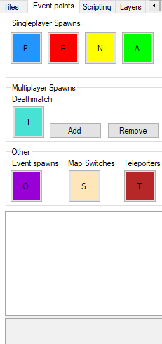
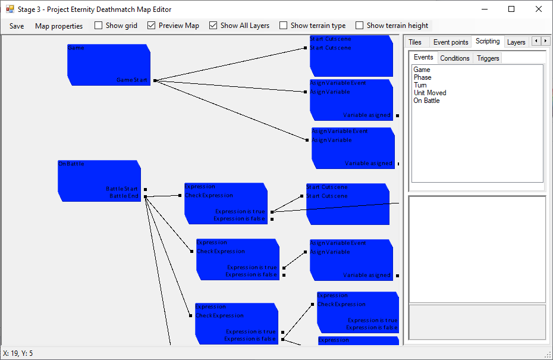

Map Editor

You can assign tiles to your grid, set spawn points and create events.
The Layers, Props and Zones tabs allow for more fancy maps but will not be covered here. Let’s start with the properties.
For a more in depth guide, go here
Tiles
Active tileset: Change to switch the visible tileset at the bottom.
Add new tileset: Add a tileset from the existing ones in the dropdown list above. Can be an image or a tileset preset. Tilesets are in the Content\Maps\Tilesets folder and must be in .xnb format. Use TEdit if necessary to convert images to .xnb.
Add new tileset as background: Same as the other except it will paint the map with it for you.
Remove active tiletset: Remove the tileset selected from the list. Will replaced every tiles using that tileset by the first one in the list.
Tiles attributes: Opens the tile attribute menu to edit the tile selected in the tileset. Every time this tile is place after will use those attribute.
3D tile attributes: Open the 3D tile attribute menu.
Event Points

Event Points: Select a button and then click on the map to add it.
Singleplayer spawns: Use P spawns to decide where the player will spawn its units after a loadout. E is for enemy, N for neutral, A for allies. They don’t offer any special features and are just used to spawn units from a cutscene.
Multiplayer Spawns: Used for team deathmatch multiplayer.
Event spawns: Used by cutscenes to check positions.
Map switches: Allow a unit to switch between multiple maps. Won’t be covered in this guide.
Teleporters: Teleport the unit and cursor by going over it.
Scripting

Scripting: Hide the map to display the scripts. Double click on an item from the list on the right to spawn it. Drag lines between the points to connect scripts together. The first script of any map is Game Start → Start Cutscene. The behavior is mostly the same as the cutscene editor so you can use the cutscene part of this guide for more details.
Events: Map events automatically called by the game.
Conditions: Mostly used to check expressions using the Formula Parser. You can check if every enemies are dead and others.
Triggers: Mostly used to start cutscenes which allow more flexibility. Can also store variables for complex scripting.